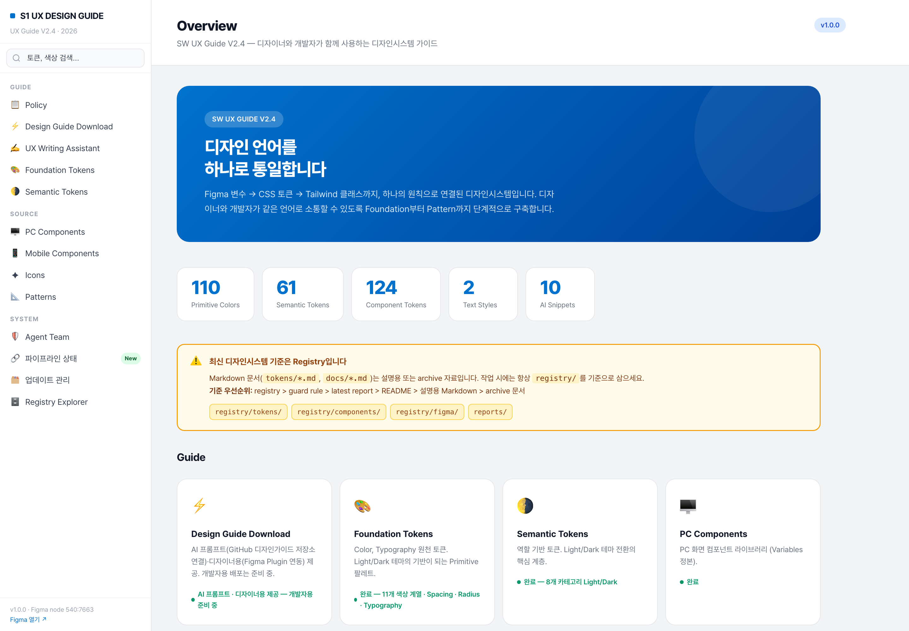
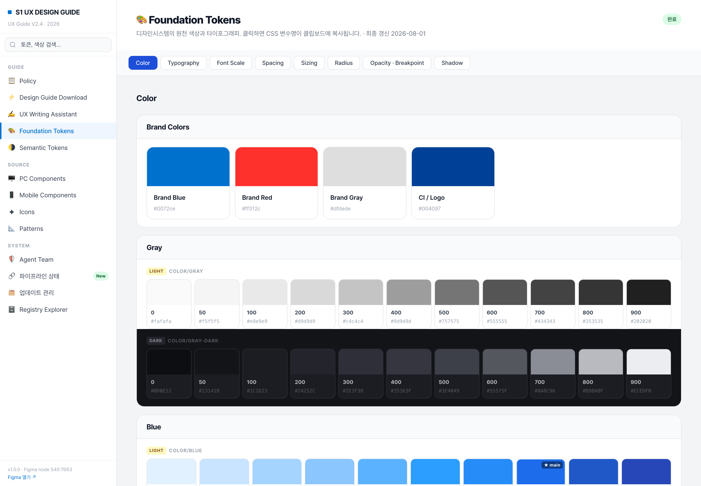
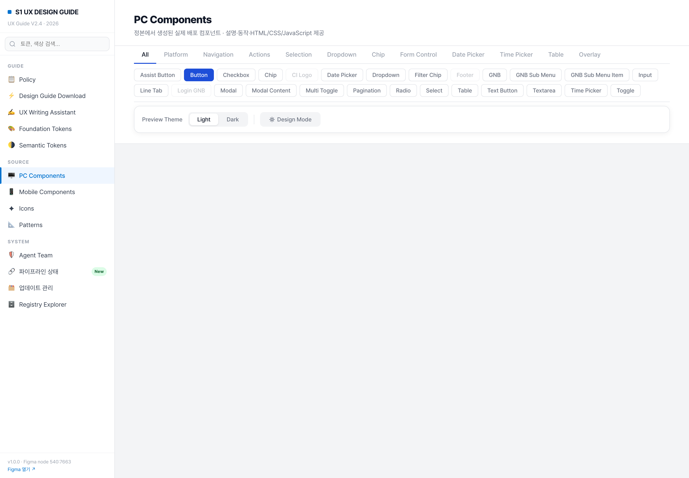

지금 사이트는 디자인가이드와 상관없이 만들어졌습니다. 가이드의 실제 부품으로 다시 입혔을 때 주요 화면이 어떻게 바뀌는지, 그리고 가이드에 없는 자리는 어떻게 할지 정리했습니다.
화면 23장 전체에 공통으로 걸립니다.
왼쪽이 지금 화면(실제 촬영), 오른쪽이 가이드 부품으로 다시 그린 모습입니다.


| 토큰 이름 | 연결된 값 | 상태 |
|---|---|---|
| --color-gray-100 | #F1F3F5 | stable |
| --color-blue-400 | #1B5FD9 | stable |

가이드 부품이 이미 있고 웹 코드도 나와 있어, 지금 껍데기를 걷어내고 끼우면 되는 것들입니다.
| 지금 사이트 | 바뀔 가이드 부품 | 보이는 변화 | |
|---|---|---|---|
| 사이드바 검색칸 | → | Input (검색형) | 높이·모서리·아이콘 자리가 가이드 규격으로. 지우기 버튼이 생깁니다. |
| 화면 안 탭 (tab-btn) | → | Tab | 밑줄 두께·선택색이 통일되고 키보드 좌우 이동이 붙습니다. |
| 걸러보기 버튼 (filter-btn) | → | Chip / Filter Chip | 둥근 알약 모양으로. 값이 있는 필터는 펼침 패널이 붙습니다. |
| 토큰·부품 표 | → | Table | 머리줄 배경·줄 간격·정렬이 통일됩니다. |
| Light / Dark 전환 | → | Multi Toggle | 두세 칸 중 하나를 고르는 정식 부품으로. |
| PC / Mobile 전환 | → | Multi Toggle | 위와 같은 부품 하나로 통일됩니다. |
| 분류 고르기 | → | Select + Dropdown | 브라우저 기본 모양이 사라지고 가이드 목록으로. |
| 복사·다운로드 버튼 | → | Button / Text Button | 크기 4단계·상태색이 가이드 규격으로. |
| 페이지 넘김 | → | Pagination | 처음·끝 화살표가 생기고 현재 쪽 표시가 통일됩니다. |
| 모바일 상단 바 | → | Mobile Header | 뒤로·닫기·알림 자리가 가이드 규격으로. |
「없으니까 대충 만든다」를 막기 위해, 없는 자리를 만날 때마다 아래 셋 중 하나로 넣습니다.
| 갈래 | 뜻 | 어떻게 처리하나 |
|---|---|---|
| A 승격 | 다른 서비스도 쓸 진짜 공통 부품인데 가이드에 아직 없는 것 | 제가 임의로 만들지 않고 승인 요청으로 올립니다. 승인되면 정식 부품으로 만들고, 사이트는 그걸 가져다 씁니다. |
| B 문서전용 | 디자인가이드 문서에서만 쓰는 전시용 조각 | 정식 부품으로 올리지 않습니다. 이름 앞에 doc- 를 붙여 따로 두고, 안에 쓰는 색·글자만 가이드 토큰으로 맞춥니다. |
| C 조합 | 새로 만들 필요 없이 있는 부품 조합으로 되는 것 | 새 부품을 만들지 않고 기존 부품을 엮습니다. 가장 좋은 결과라 우선 여기로 보냅니다. |
| 없는 자리 | 갈래 | 왜 그렇게 보나 / 어떻게 하나 |
|---|---|---|
| 사이드바 메뉴 | A 승격 | 가이드에 이름과 색은 이미 정해져 있는데 웹 코드만 없습니다(Navigation). 사이드바를 유지하기로 하면 이 부품부터 만들어야 합니다. 위 가로 바(GNB)로 가기로 하면 이 건은 사라집니다 — 그래서 이게 1번 결정입니다. |
| 카드 홈 카드 · 통계 숫자판 · 대시보드 칸 |
C 조합 A 승격 | 눌러서 이동하는 카드는 List Row(nav형)로 대체됩니다 — 새로 만들 필요가 없습니다. 누르지 않고 정보만 담는 네모 상자는 공통 부품감이라 승격 후보로 올립니다. |
| 안내·경고 상자 노란 주의 상자 · Do/Don't 상자 |
A 승격 | 어느 서비스에나 있는 흔한 부품인데 가이드에 없습니다. 성공/주의/오류/정보 4벌로 승격 요청합니다. 승인 전까지는 가이드 색만 입혀 지금 모양을 유지합니다. |
| 뱃지 · 상태 꼬리표 v1.0.0 · New · stable |
A 승격 | 가이드의 Chip 은 눌러서 고르는 물건이라 「읽기만 하는 꼬리표」로 쓰면 어긋납니다. 안 누르는 Badge 를 별도로 승격 요청합니다. 승인 전에는 Chip 을 쓰지 않고 색만 맞춘 글자로 둡니다. |
| 구분선 | A 승격 | 선 하나지만 두께·색이 화면마다 제각각입니다. 가장 싸게 통일되는 건이라 같이 올립니다. |
| 접었다 펴는 목록 메뉴 그룹 · 색 계열 묶음 |
A 승격 | 가이드에 없습니다. 다만 위 가로 바(GNB)로 가면 메뉴 쪽은 펼침 메뉴가 대신하므로 남는 건 본문 묶음뿐이라 건수가 줄어듭니다. |
| 코드 상자 복사 버튼 · 위쪽 탭 |
B 문서전용 | 가이드 문서에서만 쓰는 장치입니다. 위 탭은 Tab, 복사는 Text Button 으로 바꾸고, 코드 본문 상자만 문서 전용으로 남깁니다. |
| 색·글꼴 견본판 색 네모 · 굵기 견본 · 부품 미리보기 칸 · 상태 격자 |
B 문서전용 | 다른 서비스가 가져다 쓸 물건이 아닙니다. 문서 전용으로 확정하고 색·글자만 토큰으로 맞춥니다. |
| 파란 히어로 | B 문서전용 | 홈 첫 화면 전용 장식입니다. 그라데이션을 가이드 파랑 한 색으로 정리하고 문서 전용으로 둡니다. |
| 이모지 아이콘 | C 조합 | 가이드 아이콘에 대응하는 게 있으면 바꾸고, 없으면 빼고 글자만 남깁니다. 비슷한 걸 새로 그리지 않습니다. |
| 현재 위치 표시 breadcrumb |
C 조합 | 지금 사이트에 없지만 가로 바로 바뀌면 필요해집니다. 새 부품 없이 글자와 구분자로 조립합니다. |
한 번에 다 갈아엎지 않고, 되돌릴 수 있는 단위로 끊습니다.
| 순서 | 무엇을 | 끝나면 보이는 것 |
|---|---|---|
| 1 | 색을 전부 토큰으로 | 화면 모양은 그대로인데 다크모드가 처음으로 실제로 켜집니다. 가장 안전하고 효과가 큰 단계입니다. |
| 2 | 바로 교체되는 9자리 | 검색칸·탭·표·버튼·페이지넘김이 가이드 모양으로 바뀝니다. 화면 구조는 그대로입니다. |
| 3 | 메뉴 이전 (1번 결정에 따라) | 가장 크게 달라 보이는 단계입니다. 한 화면에서 먼저 해보고 확인받은 뒤 나머지에 펼칩니다. |
| 4 | 승격 부품 반영 | 승인된 안내상자·뱃지·카드가 들어가 손으로 만든 조각이 사라집니다. |
| 5 | 문서 전용 조각 정리 | 견본판·코드상자가 doc- 로 분리되어, 가이드 부품과 섞이지 않게 됩니다. |